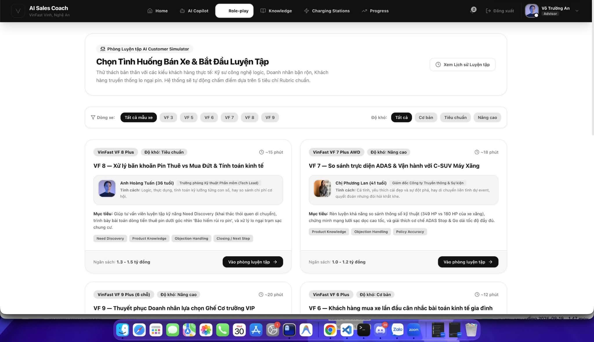
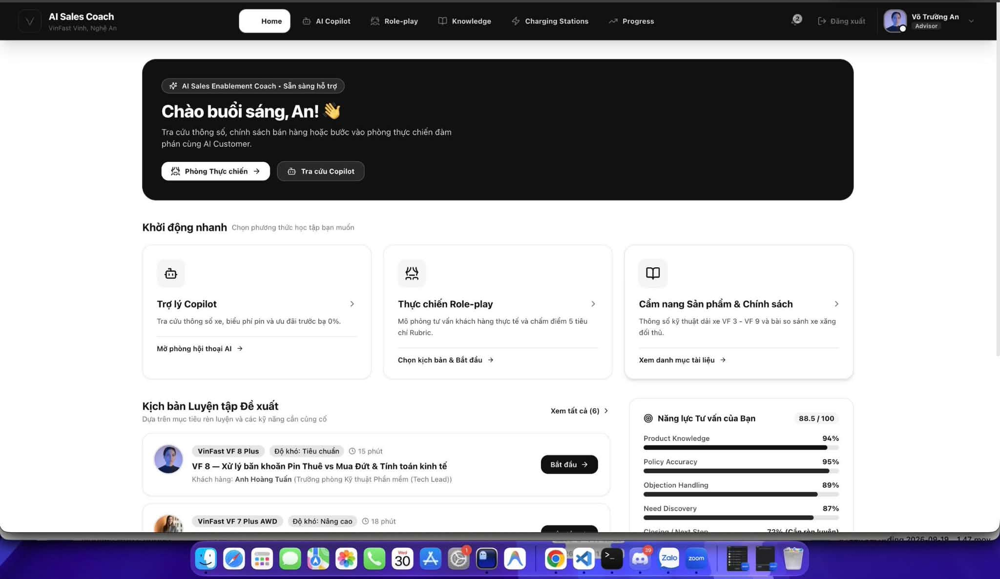
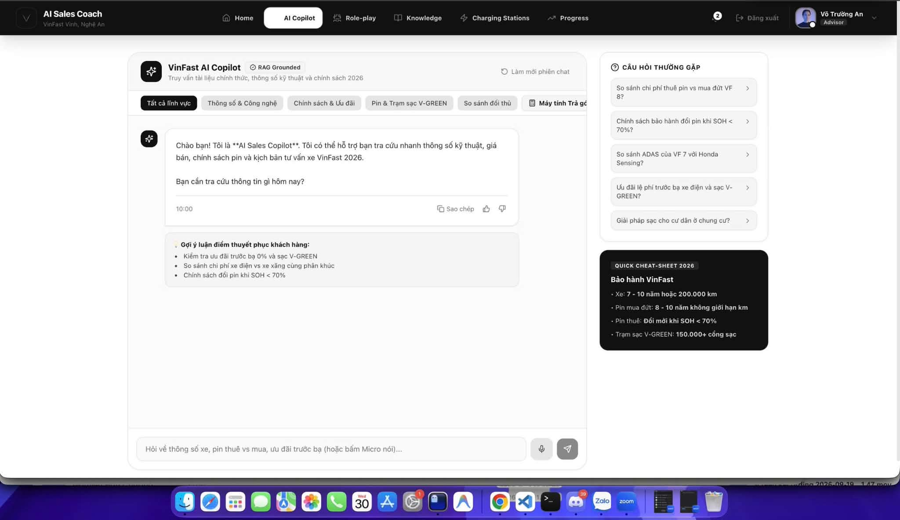
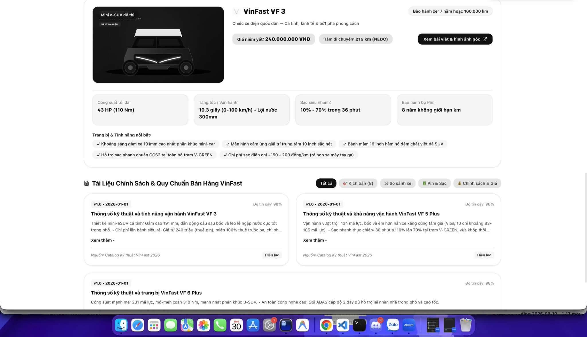
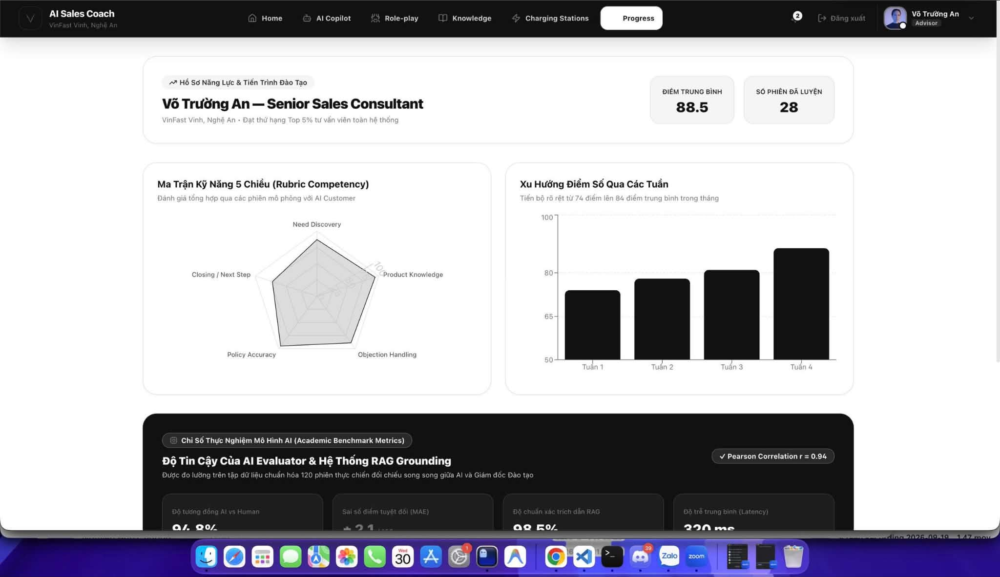

01 · Product outcome
Người dùng nhận được gì từ role-play?
Tư vấn viên chọn tình huống, thực hành với một AI Customer có persona nhất quán, nhận feedback bản nháp có dẫn chứng từ chính transcript; chỉ bài làm do tư vấn viên chọn mới nên đi vào luồng duyệt của quản lý.
02 · Runtime logic
Luồng một phiên luyện tập
Graph checkpoint state trước khi tạo phản hồi AI. Khi provider lỗi, lượt tư vấn viên đã lưu có thể phục hồi; hệ thống không âm thầm tạo câu trả lời hay điểm giả.
1. StartLoad scenario, tạo session ID và state ban đầu; AI customer mở đầu.code-owned
2. AnalyzeLLM trả về TurnAnalysis có cấu trúc: intent, fact ID, objection ID, topic.LLM signal only
3. ReduceCode validate ID theo scenario rồi cập nhật stage, facts, objections, trust/interest.deterministic
4. CustomerPrompt chỉ nhận data được phép; tạo 1–3 câu khách hàng tự nhiên.guarded model
5. Finish / ResultFreeze transcript; evaluate hoặc lưu failed để advisor retry.recovery path
03 · Safety and fairness by design
Tách thông tin để luyện tập công bằng và không rò rỉ đáp án
Khách AI cần biết persona và các fact đã được phép nói. Advisor chỉ thấy bối cảnh hợp lý trước cuộc trò chuyện cùng transcript. Hai context này không dùng chung một payload.
Server-only customer context
Được tạo bởi customer_prompt_context() và CustomerAgent allowlist.
- persona, customer goals, trust/interest, current intent
- facts đã reveal, active objections, chat history
- không include hidden facts chưa được reveal
Advisor-visible practice context
Được trả bởi advisor_visible_context() để UI phục hồi session.
- scenario identity, stage, turn count, difficulty
- visible context, trạng thái kết thúc và messages
- không có persona controls, goals, rubric, evaluator data hay objection state
Disclosure is semantic, not a magic phrase. Scenario có trigger_intent; keyword chỉ là ví dụ/fallback test. TurnAnalyzer chỉ cho reveal fact khi intent và fact ID đều tồn tại trong scenario. Một câu hỏi rộng có thể nhận gợi ý nhỏ, không được dump toàn bộ hidden facts.
04 · Public service contract
API đã xây cho Practice Room
Router được dependency-inject bằng PracticeService để test độc lập. Các handler trả lỗi rõ ràng: 404 session/scenario, 409 lifecycle conflict, 502 provider response failure, 503 evaluation unavailable.
| Route | Hành vi | Điểm bảo vệ | Trạng thái |
|---|---|---|---|
GET /practice/scenarios | Liệt kê scenario summary công khai cho advisor chọn. | Không trả hidden facts. | Built |
POST /practice/sessions | Tạo UUID session, start graph và customer opening. | Validate scenario ID; scenario không tồn tại trả 404. | Built |
POST /practice/{id}/message | Lưu advisor turn → analyze → reducer → customer response. | Per-session lock; invalid state 409; provider error 502 với hướng retry. | Built |
POST /practice/{id}/finish | Đóng phiên, chạy evaluation nếu dependencies được cấu hình. | Transcript freeze; error 503 vẫn giữ attempt để retry. | Built, needs runtime |
GET /practice/{id}GET /practice/{id}/result | Phục hồi advisor-visible session hoặc status/result của bản đánh giá nháp. | Không expose private state; ownership check là integration requirement. | Built, needs auth |
POST /practice/{id}/submit-review | Advisor chọn một attempt để gửi manager review. | Idempotent selected-attempt submit; manager ghi lý do khi sửa. | Not built |
05 · Evaluation design
Đánh giá tách “bán hàng tốt” và “nói đúng fact”
LLM-as-Judge tạo structured draft. Code kiểm evidence, nguồn và score aggregation; LLM không được tự ghi overall score.
01Need discovery
02Product knowledge
03Objection handling
04Policy accuracy
05Closing next step
- Mỗi criterion dùng thang 1–5 hoặc
NOT_OBSERVED/INSUFFICIENT_EVIDENCE. - Result khởi đầu với
review_status = AI_DRAFT, không phải official score.
Evidence validation
Judge output chỉ được nhận nếu có thể đối chiếu
Transcript evidence:
message_id phải tồn tại và quote phải là chuỗi chính xác trong message tương ứng.Factual finding: claim phải nằm trong advisor message; source reference bắt buộc khi trạng thái supported/contradicted.
Knowledge source:
source_id, version và quote đều phải khớp evidence do shared knowledge layer cung cấp.Overall score: code tính trung bình các criterion được assessed; nếu không có criterion assessed thì overall = null.
Failure mode: malformed / unverifiable judge output bị reject; evaluation status chuyển
FAILED và advisor có thể retry Finish.06 · Evidence, not assumption
Trạng thái kiểm chứng hiện tại
Đây là tách bạch giữa phần đã kiểm tra và các tuyên bố chưa có bằng chứng. Kết quả scoped test được ghi trong eval/results/report.md ngày 29.09.2026.
Role-play + Practice API
Scenario contract, hidden-fact isolation, turn analysis, reducer, customer output, graph, evaluator, service và API boundary.
PASS · 72 tests in 2.21sStatic checks
ruff check src backend tests đã pass. ruff format --check còn báo 6 file cần format.
Không được suy diễn
Full suite từng bị dừng tiến triển sau test generic template đầu tiên; chưa có coverage, deployed E2E, provider, database hoặc frontend verification.
NOT VERIFIED07 · Integration boundary
Những contract cần từ shared runtime trước khi gọi là MVP hoàn chỉnh
Đây không phải các tính năng “có thể giả bằng mock khi demo”. Chúng là ranh giới cần được nối thật để đảm bảo result, data và HITL đáng tin cậy.
Interfaces cần chốt
LLMClient.generate_structured(...)cho customer, analyzer và evaluator model adapters.CheckpointRepository.load/save(...)vàPracticeSessionRepository.create/get/update(...)cho persistence và recovery bền vững.KnowledgeService.search(...)và evidence provider để chấm factual claim từ nguồn thật.EvaluationRepository.save(...)vàManagerReviewRepository.submit_once(...)cho AI draft, selected attempt và HITL audit trail.
Quyết định vận hành còn phải thống nhất
- Transaction boundary giữa save turn, customer reply và checkpoint; retry behavior khi provider timeout.
- request/session IDs, structured API error format, auth identity/ownership check và idempotency key.
- Benchmark: 50 ca Copilot; 3 scenarios × 6 test paths cho simulator; calibration judge trước khi công bố chất lượng score.
08 · Next demonstrable milestone
Một vertical slice nên được hoàn thiện theo thứ tự này
1. Nối runtime thật
Thay in-memory/checkpoint test double bằng shared persistence, LLM adapter và knowledge evidence provider. Không im lặng fallback khi dependency fail.
2. Nối UI và HITL
Advisor: choose → chat → recover → finish → draft → submit chosen attempt. Manager: inspect transcript/evidence → approve or edit with reason.
3. Chạy evidence release
Format 6 files, tìm nguyên nhân full-suite hang, chạy E2E trên deployed app và ghi benchmark/evaluation artefacts trước demo cuối.
09 · Gated state transition
“Câu advisor này đã đủ để đi tiếp chưa?”
Đây không phải một điểm đậu/rớt chung. Hệ thống có bốn quyết định riêng: unlock hidden fact, resolve objection, move stage và finish session. Tên đúng của cơ chế là LLM-assisted semantic gating.
LLM đề xuất ý nghĩa; code quyết định state có thể đổi hay không
Advisor messageCâu hỏi hoặc câu trả lời ngôn ngữ tự nhiên.
TurnAnalyzerStructured signals: intent, fact ID, objection ID, topic, next step.
AllowlistLoại intent/fact/objection không tồn tại trong scenario.
ReducerChỉ transition hợp lệ mới được ghi vào RoleplayState.
Persist + CustomerSave state; AI Customer chỉ thấy context được phép.
Ví dụ cụ thể: unlock daily_distance
Advisor hỏi “Mỗi ngày anh thường chạy khoảng bao nhiêu km?” → analyzer đề xuất detected_intents = [ask_daily_travel_distance] và discovered_fact_ids = [daily_distance]. Code chỉ reveal fact nếu cặp này tồn tại trong scenario. Keyword chỉ là test hint; intent mới là gate semantic.
Giới hạn hiện tại cần nói trung thực: code đã kiểm lifecycle và allowlist IDs, nhưng chưa tự chứng minh câu trả lời xử lý objection có chất lượng theo
resolve_condition. Điều đó còn phụ thuộc concrete TurnAnalysisModel, knowledge evidence validation trước khi set resolved_objection_ids. Ngoài ra drop_out_trigger mới có trong data, chưa thấy runtime enforcement.10 · Scenario-based illustration
Mock conversation từ scenario đã có trong corpus
Corpus hiện có 3 scenario. Minh hoạ này dùng SCENARIO_01_VF5_TAXI — “Bác tài chạy dịch vụ cân nhắc đổi từ xe xăng sang VF 5 Plus”, độ khó Medium, kênh Fanpage, tối đa 8 lượt advisor.
Mock, không phải transcript đã chạy model. Nội dung chỉ minh hoạ disclosure và state transition theo scenario contract. Các số liệu giá, chính sách pin hoặc thời gian sạc được cố ý không bịa ra vì đoạn demo này không gọi knowledge tool.
11 · UI prototype evidence
Các màn hình prototype liên quan đến luồng role-play
Năm ảnh dưới đây thể hiện hướng trải nghiệm người dùng và cách role-play được đặt trong sản phẩm AI Sales Coach.
Phạm vi bằng chứng: đây là ảnh prototype/UI concept do nhóm cung cấp, không phải bằng chứng rằng backend, RAG grounding, benchmark hay score trên màn hình đã chạy production. Giao diện sẽ còn được chỉnh sửa trong quá trình tích hợp MVP.

GET /practice/scenarios và POST /practice/sessions.


